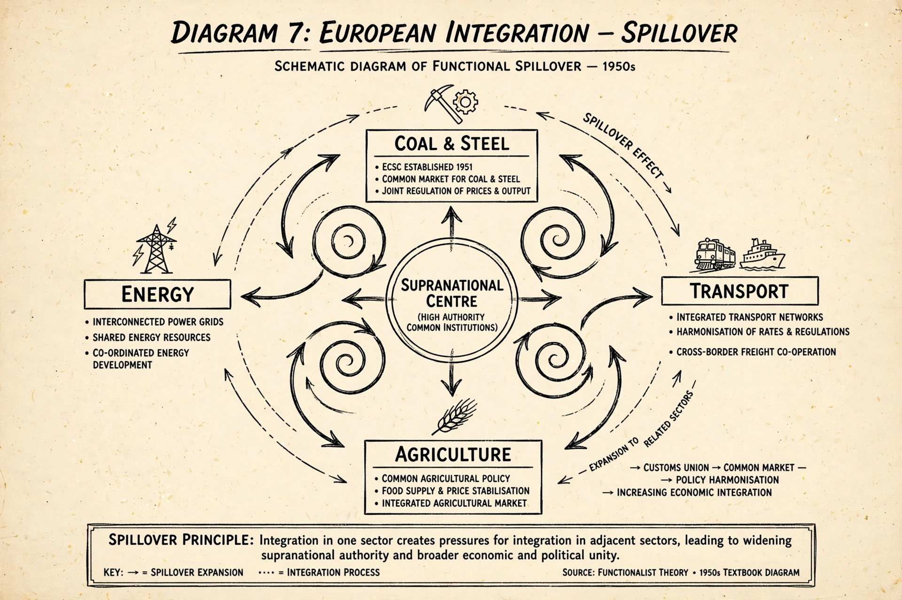

| Neofunctionalism | |
|---|---|
| Field | International relations, European studies |
| Key figure | Ernst B. Haas |
| Key work | The Uniting of Europe (1958) |
| Core concepts | Spillover, supranationality, elite socialisation |
| Rival theories | Intergovernmentalism, liberal intergovernmentalism |

Neofunctionalism is a theory of regional integration, usually associated with the political scientist Ernst B. Haas, which seeks to explain how and why states voluntarily merge with their neighbours, surrendering some sovereign attributes in exchange for new techniques of resolving conflict among themselves. It was developed to explain the process of European integration that produced the European Coal and Steel Community and the European Economic Community in the 1950s.
The theory is a revision of the older functionalism of David Mitrany. Where classical functionalism expected technical agencies to bypass politics, neofunctionalism emphasised the political nature of integration: once governments delegate authority to a supranational body, a self-reinforcing process of spillover is set in motion.
The central mechanism of neofunctionalism is spillover, which Haas and later scholars divided into several types:
By the mid-1970s Haas himself declared regional integration theory "obsolescent", as the Luxembourg compromise and the assertiveness of Charles de Gaulle suggested that states remained firmly in control. The relaunch of European integration in the 1980s — the Single European Act and the drive to complete the single market — revived scholarly interest, and neofunctionalism returned as one of the principal explanations of integration, debated against Andrew Moravcsik's liberal intergovernmentalism.